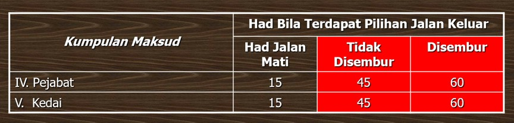
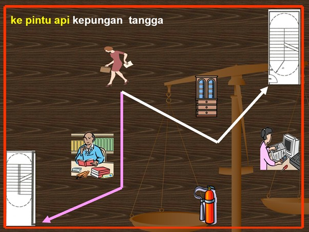
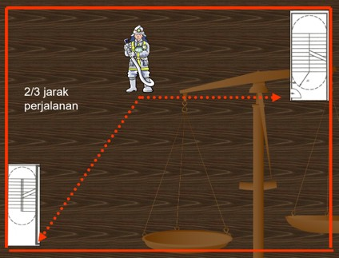

Jarak Perjalanan (Travel Distance)
Jarak perjalanan pula ertinya jarak yang perlu dilalui daripada mana-mana tempat di sesuatu tingkat bangunan sama ada :
- Ke pintu penahan api dalam kepungan tangga; atau
- Jika tidak ada pintu tersebut, ke anak tangga pertama tangga itu
Cara untuk mengukur jarak perjalanan ialah kita berada di tengah-tengah antara pilihan jalan keluar. Had jarak perjalanan perlu dirujuk di dalam jadual ketujuh. Kaedah yang boleh dicadangkan untuk menentukan lokasi jalan alternatif yang mematuhi jarak perjalanan adalah seperti di bawah. Cuma, kita perlu pastikan jarak a dan b tidak melebihi jarak perjalanan yang dibenarkan.

Jarak perjalanan ini perlu diukur mengikut laluan yang boleh dilalui. Sudut pilihan bagi jalan keluar ini mestilah melebihi 45 darjah di antara dua pintu tangga ini. Sekiranya kedudukan diantara dua pintu tangga kurang daripada 45 darjah, maka kedudukan ini masih lagi di bawah kategori jalan mati. Jarak perjalanan masih belum wujud lagi.
Had limit jarak perjalanan boleh dirujuk di jadual ketujuh. Had ini berbeza jika bangunan itu mempunyai sistem sprinkler atau tidak. Kebiasaannya jika sesebuah bangunan itu mempunyai sistem sprinkler, had jarak perjalanan akan lebih jauh sedikit berbanding bangunan yang tidak mempunyai sprinkler.
Jarak perjalanan biasanya diukur mengikut laluan. Jika terdapat halangan, kita hendaklah mengelak setiap halangan itu. Pastikan jarak yang dilalui itu tidak melebihi had yang dibenarkan.

Jarak Tepat
Jarak tepat ialah jarak terdekat sekali daripada mana-mana tempat dalam kawasan lantai diukur dalam kepungan luar bangunan itu kepada tempat keluar yang berkenaan tanpa mengira dinding, dinding sekat atau pepasangan selain daripada dinding kepungan atau dinding sekat bagi tangga terlindung.
Konsep mengukur jarak tepat adalah sama seperti mengukur jarak perjalanan. Cuma untuk jarak tepat, had yang dibenarkan hanya 2/3 daripada had jarak perjalanan. Sebagai contoh, jika jarak perjalanan bagi pejabat yang yang mempunyai sistem penyembur air automatik ialah 60 meter, maka jarak tepat bagi pejabat ini ialah 40 meter.
